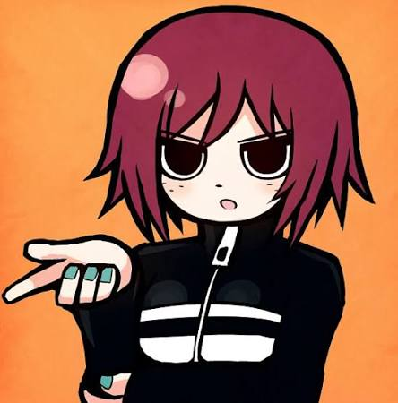

Scott Pilgrim
Bajista / Protagonista
Tiene 23 años, toca el bajo en Sex Bob-Omb y debe derrotar a los 7 ex malvados de Ramona.
VER EN FANDOM WIKIEn esta página podrás conocer a algunos personajes de la serie Scott Pilgrim ~ (>_<)9
Tiene 23 años, toca el bajo en Sex Bob-Omb y debe derrotar a los 7 ex malvados de Ramona.
VER EN FANDOM WIKIMisteriosa chica estadounidense que trabaja para Amazon. Usa las vías del subespacio.
VER EN FANDOM WIKILíder y vocalista principal de Sex Bob-Omb. Obsesionado con la perfección musical.
VER EN FANDOM WIKI
Baterista sarcástica de la banda y primera novia de Scott. Trabaja en un videoclub.
VER EN FANDOM WIKI
Tiene poderes místicos y puede invocar chicas demonio. Primer novio de Ramona.
VER EN FANDOM WIKIFamoso actor de películas de acción y skateboarder profesional. Confiado en exceso.
VER EN FANDOM WIKIEmpresario musical y el cerebro detrás de la Liga de los Exs Malvados. El enemigo final.
VER EN FANDOM WIKI